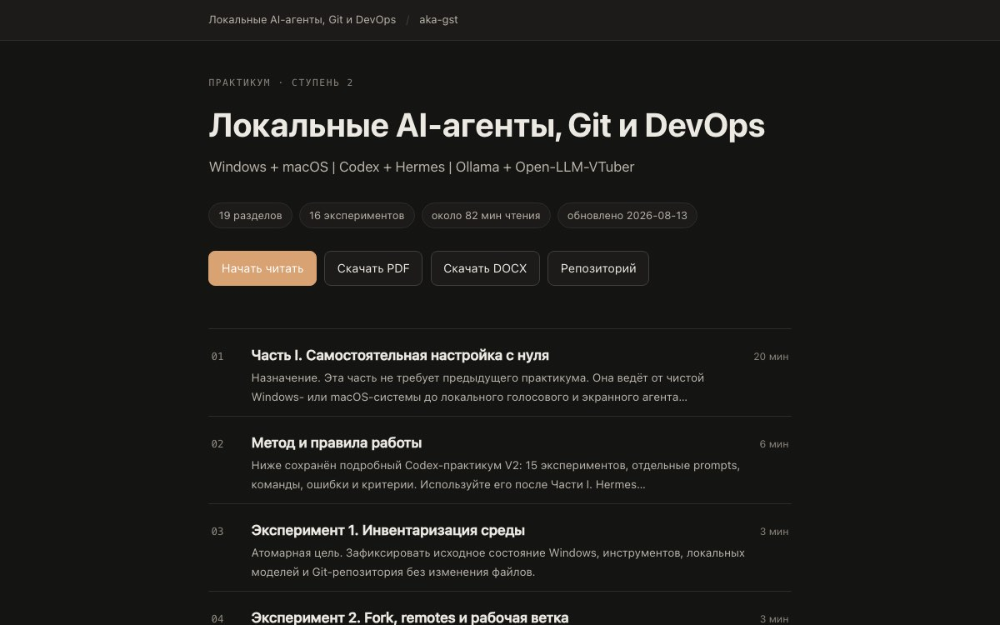
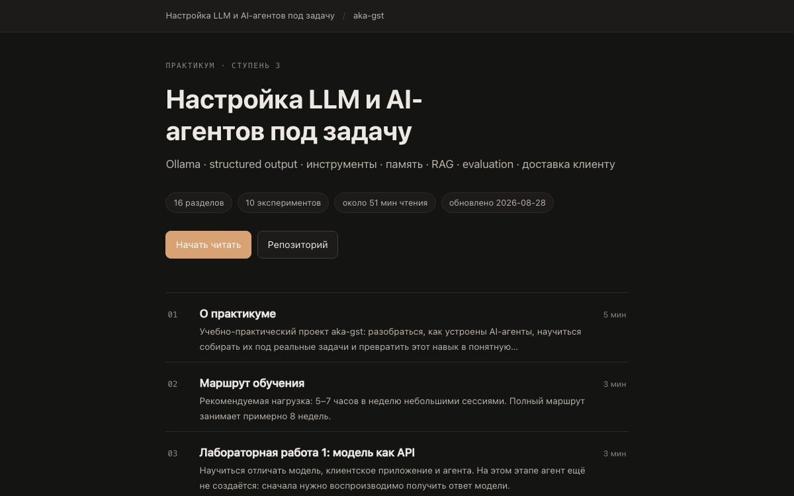

iRouter
Одна точка входа к нескольким AI-провайдерам: переход между ними, когда один недоступен.
Готовим демонстрациюСергей Гостов / AI-продукты, игры, системы
Придумываю и собираю AI-инструменты, игры и обучение через действие. Главный проект — QueQuest: сначала решаешь задачу руками, потом понимаешь, зачем нужна автоматизация.
Избранная работа
Показываю не только красивый экран: что работает, для кого это сделано и куда нажать, чтобы проверить самому.
На складе не хватает людей. Ты таскаешь ящики сам, находишь способ запустить роботизированную руку и видишь, как она делает работу за тебя. Программирование появляется, когда оно действительно нужно.
Исходники и развитие проекта ↗Фрагмент начала новой первой смены. Браузерное демо курса — в разделе игр.Редактор метаданных снимков, который можно попробовать в браузере.
Соединяет приложение с локальной нейросетью. Поведение при ошибках и смене провайдера проверяется отдельными сценариями.
Рабочие инструменты, образовательные продукты и открытые демонстрации.

Практикум · веб + PDFПрактикум: тестирование локального AI-агентаПошаговое руководство: как поднять нейросеть у себя на машине, подключить к ней программу и убедиться, что всё работаетКейс 05
Практикум · веб + сервисПрактикум: настройка LLM и агентовРазбираю на живом примере, как устроен ИИ-агент: чем он пользуется, что помнит и как проверить, что он не выдумываетКейс 06Самохостинг · WebRTCВоки-ТокиВидеозвонки на своём сервере: работают внутри домашней сети, даже когда интернета нетКейсЭти инструменты готовлю к отдельным демонстрациям. Пока показываю смысл проекта, без обещания готового публичного сервиса.
Собираю сценарии, интерфейсы, инструменты и проверку в работающий продукт. Санкт-Петербург · удалённо.
Агентные системы и их проверка · проектное участие
Автор и архитектор · интеграция приложений с локальными LLM, QA-стратегия, CI и релиз
Международный образовательный проект · мультимедиа и AI-инструменты · самозанятый
Геймдизайнер / Project Manager / креативный руководитель
Открыть кейс VitalSchool ↗Первая публикация: обзор на Resistance: Fall of Man
агентные сценарии · интеграция LLM с приложениями · локальные и облачные LLM · RAG и проверяемые источники · инструменты и allowlist · память сессий · structured output · local-first и приватность
AI/LLM QA · оценка точности ответов · поиск галлюцинаций · пограничные сценарии · сравнение моделей · LLM evaluation · human feedback / evaluation · рубрики оценки · обоснованные рецензии · prompt-injection canary · API / E2E / негативные проверки · CI и Allure
Python · JavaScript · FastAPI · REST API · pytest и httpx · Playwright · Node.js test · Docker/Compose · GitHub Actions
продуктовые сценарии · безопасные границы ассистентов · технические требования · удалённая эксплуатация · Vercel · удалённые рабочие станции · безопасные каналы доступа · проверка результата · демо и приёмка · образовательные продукты · креативное руководство команды
НГТУ, АВТФ · прикладная математика и информатика, 2010–2017